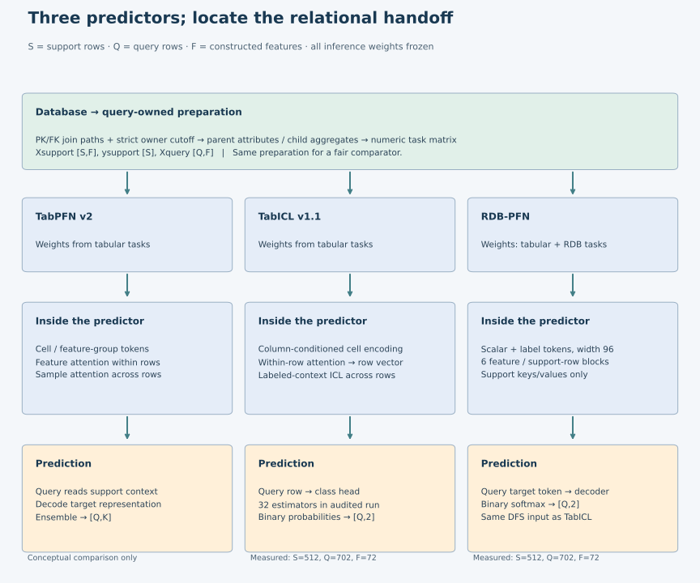
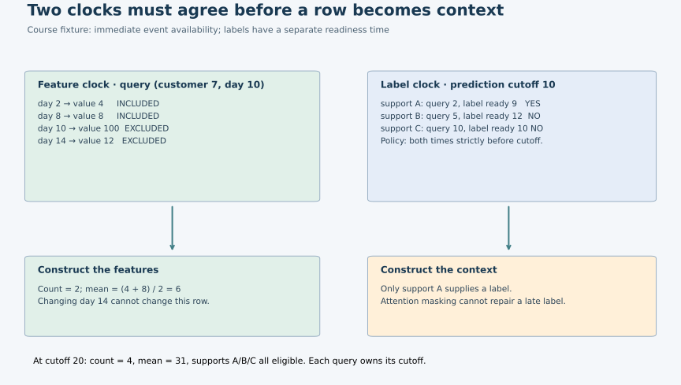
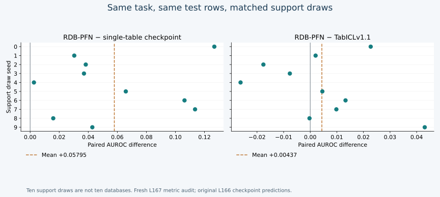

Year 5 · Quarter 1 · Lesson 167
Tabular → relational FM: what transfers?
A tabular foundation model can predict from relationally constructed features. Your job is to locate where the relationships enter—and what the predictor still cannot recover.
Today’s win: build a defensible transfer map: what carries over, what needs new machinery, and which experiment supports each claim. Read and trace in 15 minutes; allow 30–45 minutes for the notebook and written defense.
Student notebook · Executed solution · Quick reference · Reproduction contract
1 · The gap left by Lesson 166¶
Lesson 166 showed how synthetic relational data can shape a pretrained predictor. But its comparator, TabICL, also received the same relationally constructed matrix. If both methods see database information, what exactly makes their learning different?
Retrieve TabPFN v2 and TabICL: support means labeled examples supplied during inference; a query is a row whose target must remain hidden. In-context learning changes these inputs while the pretrained weights stay fixed. Pretraining previously changed the weights across many tasks. The distinction is explained in the TabICL paper; Molnar’s introduction and reading map provide a gentle recap.
Use three separate questions: What information reaches the model? What prior shaped its weights? How does it adapt to this task? A model name alone answers none of them completely. This directly serves our mission: before claiming that relational models unlock extra value, make the tabular baseline competitive and identify the actual source of any gain.
2 · Model architecture: trace the handoff¶
In plain terms. Keep three boxes separate: prepare the database inputs, load the learned weights, and supply this task's examples. Two methods can receive exactly the same relational features yet have learned different prediction rules before this task.
Follow the computation
Relational preparation and pretrained attention are different layers
- 1
Construct the task matrix
Strict cutoff-safe joins and aggregates produce the same 72 features for the compared runs.
- 2
Provide labeled support
512 support rows and labels accompany 702 query rows.
- 3
Apply the selected frozen predictor
TabICL reads column/row/ICL states; RDB-PFN alternates feature and support-row attention.
- 4
Decode the query target
Each measured arm emits binary probabilities; TabPFN is a conceptual comparator here.
Open the decisive operation
Does using relationally engineered features mean the predictor itself attends over the original database graph?
No. The shown predictors receive the constructed table. Graph structure has already been summarized by preparation.
Trace answer: No. The shown predictors receive the constructed table. Graph structure has already been summarized by preparation.
Selected TabICL/RDB-PFN comparison. Shared preprocessing and support identities are part of fairness.


The shared interface is predict(X_support, y_support, X_query) with frozen weights. The implementations differ. TabPFN v2 alternates attention across features and across examples. TabICL first builds row representations, then performs dataset-level ICL. The released RDB-PFN numeric model alternates feature attention and support-only row attention over a DFS matrix. A shared API does not make their internal operations or pretrained weights interchangeable. See TabPFN’s architecture, TabICL, and RDB-PFN §§4–5.
DFS means Deep Feature Synthesis: follow relationships and aggregate records into target-row features. It can supply relational information to a tabular FM. RDB-PFN additionally changes the synthetic pretraining distribution. Neither fact means its inference input is the original database graph. In contrast, Griffin makes graph structure part of the model’s computation. This distinction explains why “relational” can describe the data preparation, the pretraining prior, or the predictor architecture.
| Component | What carries over | What must be supplied or checked |
|---|---|---|
| Row/cell representation | Encoders can process a constructed numeric table | Keys define joins; arbitrary ID codes do not explain relationships |
| Context inference | Labeled support guides frozen-weight predictions | Every support label must be available at the query time |
| Feature construction | A tabular FM accepts engineered relational summaries | Join path, aggregation and owner cutoff must be explicit |
| Pretraining | Learn a reusable prediction procedure across tasks | A relational synthetic prior changes task distribution; same API does not imply same prior |
| Evaluation | AUROC compares binary rankings | Align complete entity/cutoff keys, label orientation and support draws |
What cannot transfer automatically: information discarded by the representation. Child histories [2,8] and [5,5] both become count 2, mean 5. Any predictor receiving only those two summaries sees identical inputs. It cannot distinguish their spread without another feature or representation. Better pretraining cannot reconstruct which history actually occurred.
Work the collision through the handoff. These are two invented histories for the same cutoff. Population variance averages squared distance from the mean:
| History | Count, mean | Variance |
|---|---|---|
| [2, 8] | [2, 5] | (9 + 9) / 2 = 9 |
| [5, 5] | [2, 5] | (0 + 0) / 2 = 0 |
Hold the support set, other query features and inference randomness fixed. A deterministic predictor given only [count, mean] must return the same prediction for both histories. Adding variance makes them distinguishable; it does not force a learned model to use it well. Transfer check: histories [2,5,8] and [5,2,8] also have the same variance. No order-invariant summary can tell which value came first. A task that depends on event order needs time-aware features or a sequence representation.
3 · Worked trace: the attention mask is only half the contract¶
Suppose customer 7 has purchases (day 2, value 4), (day 8, value 8), (day 10, value 100), (day 14, value 12). For a prediction at day 10, a strict-past join includes days 2 and 8: count 2, mean 6. At day 20, all four are eligible: count 4, mean 31. One batch-wide cutoff would corrupt the earlier query.
Now consider three candidate support rows, queried on days 2, 5 and 10. Their labels become available on days 9, 12 and 10. At cutoff 10, this lesson’s strict-before policy allows only the first row. The second row’s features are old enough but its label is not. The third sits exactly on the boundary. In a real task, label availability comes from the target horizon and reporting process; it is not generally the task timestamp.
Boundary convention changed deliberately. Lesson 165 allowed a matured label arriving exactly at the current query cutoff (arrival ≤ cutoff), while still requiring an earlier context anchor. This fixture uses strict-before availability (arrival < cutoff). Neither convention should be inferred from a variable named “time”: write it into the task contract. A context anchored on day 5 whose label arrives on day 10 passes L165's arrival test at day 10 and fails this fixture's test. Its input graph still uses its own day-5 cutoff in both cases.


The explorer recomputes features and eligible support identities, not model probabilities. Its baseline is cutoff 10, final purchase value 12. Changing that later purchase must leave the baseline features unchanged. At cutoff 20 it should change the mean. This fixture assumes events are available immediately; it does not certify historical availability in RelBench.
Visible implementation · strict-past aggregation¶
def temporal_summary(queries, events):
"""Course fixture: [entity,cutoff] queries; [entity,event_time,value] events.
Return [count,mean] for matching events strictly before each owner cutoff.
Event time is assumed to equal availability time ONLY in this fixture.
"""
import numpy as np
q=np.asarray(queries);e=np.asarray(events)
if q.ndim!=2 or q.shape[1]!=2 or e.ndim!=2 or e.shape[1]!=3:
raise ValueError('Expected query pairs and event triples')
if not np.isfinite(q).all() or not np.isfinite(e).all():
raise ValueError('Nonfinite fixture input')
if len(set(map(tuple,q)))!=len(q):raise ValueError('Duplicate query keys')
result=[]
for entity,cutoff in q:
values=e[(e[:,0]==entity)&(e[:,1]<cutoff),2]
result.append([len(values),float(values.mean()) if len(values) else 0.])
return np.asarray(result,dtype=float).reshape(-1,2)
The relational preparation enforces time eligibility; the predictor’s attention mask enforces which supplied rows can act as context. A correct mask still leaks if you feed it labels that were unavailable. The notebook makes you implement both eligibility functions, then tests future-value changes, repeated entities and exact-boundary cases.
4 · Reproduce the evidence before interpreting it¶
The named experiment is RDB-PFN v5, Table 9: rel-f1 / driver-dnf, 512 support rows, seeds 0–9, three fixed arms. All receive 72 released DFS features and the full 702-query test population. TabICLv1.1 uses 32 estimators. TabPFN v2 is discussed above but is not a measured arm here.
Lesson 166 ran the 30 checkpoint evaluations. Lesson 167 independently verifies 41 input/source files, regenerates all support draws, aligns (driverId,date) identities and recomputes all 21,060 predictions’ AUROCs using average ranks with half-credit ties. No new benchmark inference or cloud job runs in this lesson.
| Model | Paper AUROC | Audited mean ± sample SD | Verdict |
|---|---|---|---|
| RDBPFN | 0.7219 | 0.721938 ± 0.019983 | CLOSE |
| RDBPFN_single | 0.6640 | 0.663990 ± 0.034177 | CLOSE |
| TabICLv1.1 | 0.7176 | 0.717568 ± 0.009770 | CLOSE |


The paired RDB-PFN minus single-table checkpoint difference is +0.05795 AUROC, positive in all ten draws. Against TabICL it is +0.00437, positive in six draws and negative in four. These are ten support draws on one task, with overlapping support and the same test population—not ten independent databases. Their variability does not establish cross-database generalization or a causal effect of the prior alone. The single-table checkpoint is the closer comparison, but this replay does not independently recreate its full training history.
Keep the boundaries visible. All three means match the paper at four decimals; the inherited descriptive tolerance is 0.02 AUROC, not a statistical equivalence test. Released labels complement the current raw DNF reconstruction documented in L166. Preserve that orientation when replaying: silently calling class 1 “DNF risk” would be wrong. Complement both labels and probabilities to preserve AUROC under the alternate orientation. This lesson audits saved evidence; it does not rerun the SQL reconstruction or original DFS. Historical identity remains NOT_ESTABLISHED; fresh pretraining and whole-paper reproduction remain NOT_RUN.
5 · Your transfer map¶
Open the notebook and complete three live functions: temporal_summary, eligible_support, and keyed_auc. The last one must reject missing or duplicate keys and align reordered predictions. The full 30-run audit calls your scorer, so a hard-coded toy answer cannot complete the lab.
Then fill the transfer-map template: for representation, prior, adaptation, time and evaluation, state what transfers, what must be added, a concrete counterexample, and the evidence boundary. Defend this conclusion in 300–500 words: “A strong relationally prepared tabular baseline tests whether a more specialized relational model adds value.” Do not claim the experiment proves the thesis across databases.
Exit check: explain the count/mean collision; exclude a support label whose window has not closed; reproduce the paired scores; distinguish checkpoint replay from pretraining. Author checks do not mark your learning complete: PENDING_WRITTEN_DEFENSE. Tomorrow, redraw the three interfaces without notes. Lesson 168 will ask whether the same reasoning survives an unseen database schema. Ask the agent to review your map or explain any unclear step.
Primary reading: RDB-PFN v5 §§4–5 and Table 9, comparing the input representation with TabICL’s two-stage design. Full protocol and runnable fresh-inference lane.